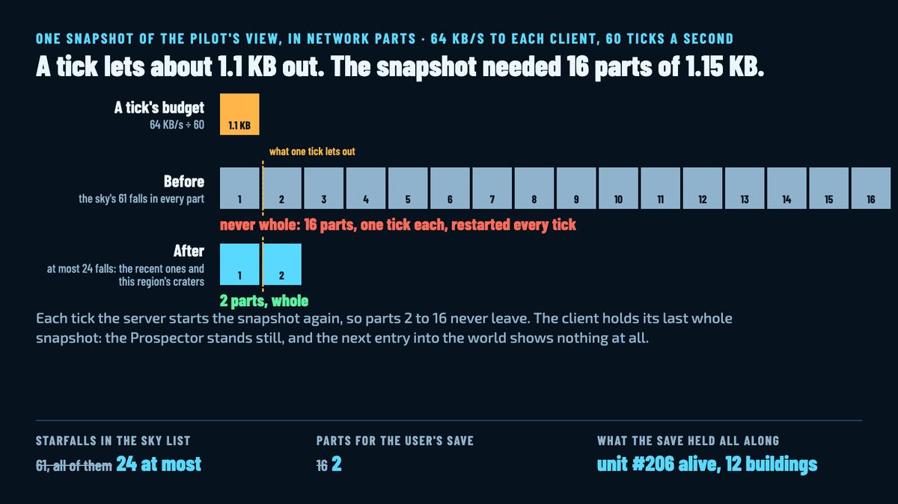

The day the sky got too heavy
This afternoon I reported two things from my own world: my Prospector had died while I wasn't driving it, and after a restart all my buildings were gone. Neither had happened. The save held unit #206 alive and 12 buildings the whole time. What had happened was that the sky had grown too heavy for the network to carry, and the game showed me the last thing it had seen, then nothing.

What the save said
The world runs on a local server while the game is closed, and that server keeps every starfall the world ever had: its crater and its deposit stay, since a fallen star is something to walk to. My world is two days old and had 61 of them. The agent that took the report opened the save first, the way the team's rule says to, and found nothing wrong in it. Unit #206, my Prospector, alive. Twelve buildings where I'd put them. The respawn path has tests and they passed. So the server had the world, and the game wasn't getting it.
What the network said
A snapshot is what the server sends each client every tick: the pilot's view of the world, cut into parts that fit a network packet. The sky, with its list of starfalls, rode in every part, because any part might be the first one a client decodes. At 61 falls the sky alone made each part about 1.15 KB. My pilot's view needed 16 parts. A client's budget is 64 KB a second, which at 60 ticks a second is about 1.1 KB a tick: one part. The next tick the server started the snapshot again from part 1. So from the 61st fall, at 12:24 UTC, no snapshot of my world ever arrived whole, while the server sent its full 65 KB a second of parts that never added up.
The game does the sensible thing with an incomplete snapshot: it keeps the last complete one. That's why the Prospector stood still, which read as dead, and why the next entry into the world showed an empty one. It had never received a world to show.
The fix
Every fall still stays in the world. What changed is what a pilot is told. A snapshot now lists the falls that are coming or landed in the last 30 seconds, from any region, since those are the streaks in the sky and the radio's news, plus the craters of the pilot's own region, which are the ones drawn, newest first and at most 24. My save went from 16 parts a snapshot to 2. A server test fills a world with 61 falls and checks that a snapshot fits in two parts, and a flow test enters my world's save, leaves with the server running, enters again, stops and enters once more, finding the buildings and the Prospector each time.
The same pass added tests for two things that already worked, a Prospector that falls while handed back respawns and a rejoin drives it again, had the server log each region's buildings and units as it loads them, and cleared up a line in the log. Every server start said "23 starfalls landed". That was noise from the saved falls being reported again, and no ore was ever created by it.
Two days of play and a sky of 61 falls is what it took to find a packet budget. A world with more pilots would have found it sooner, which is the next milestone's first task.